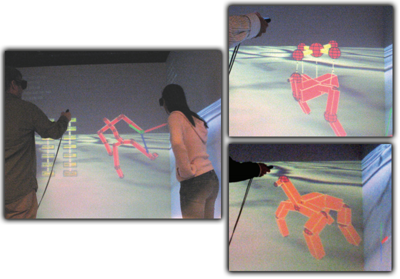

|
The images illustrate a novel method for creating 3D animations by letting users act directly on 3D characters in a virtual reality Cave environment. Our system records the performance of the animator as she manipulates the character’s joints and limbs using 3D trackers. By making multiple passes, animators can layer simple motions to create more complex animations. |